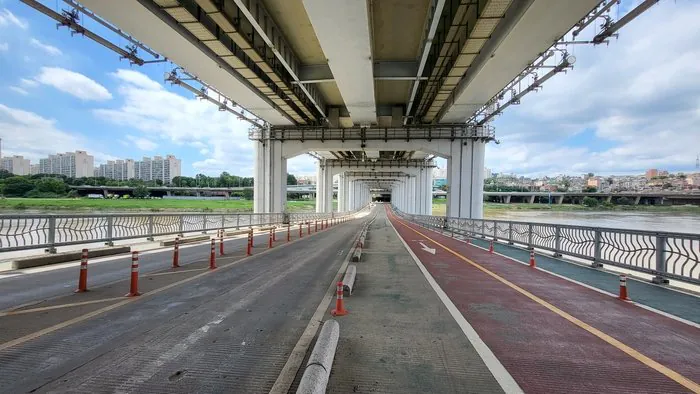
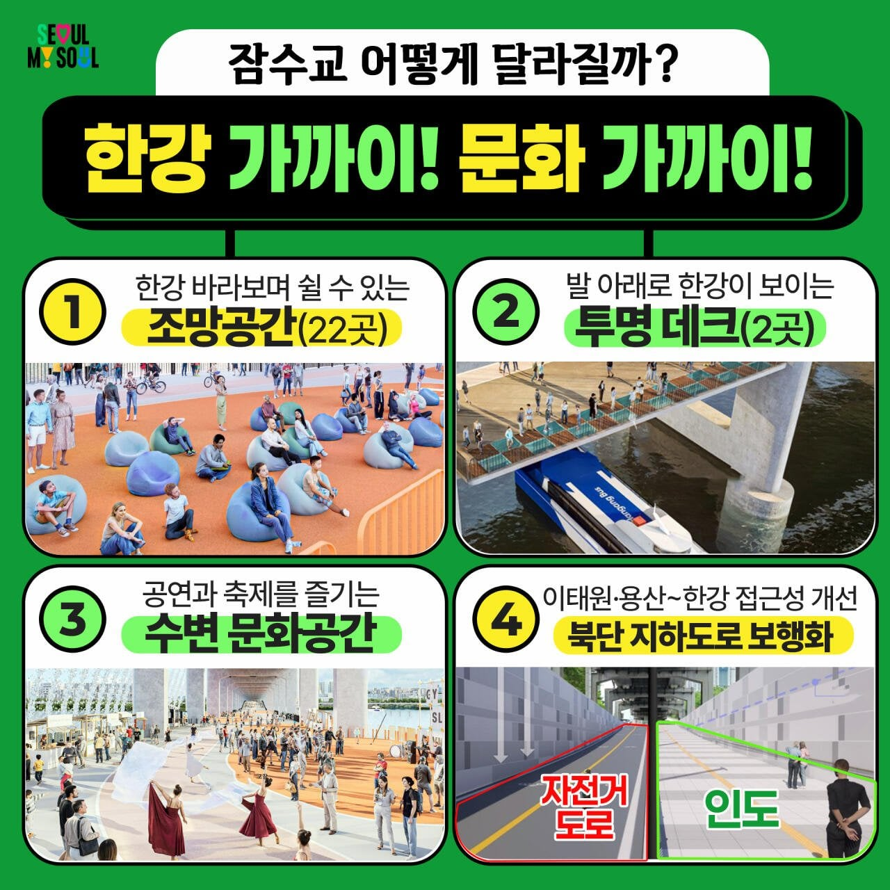

준공 50년만에 보행교로 전면 전환되면서
0시부터 차량 통행 영구 제한
(오늘은 뚜벅뚜벅 축제로 이미 제한된 상태였음)


준공 50년만에 보행교로 전면 전환되면서
0시부터 차량 통행 영구 제한
(오늘은 뚜벅뚜벅 축제로 이미 제한된 상태였음)
어휴 드디어
저기가면 씨발 좆같은 바이크나 차량들 좆같이 시끄러웠는데
한량같은 새끼들 안보이겠네 기모띠
바이크충들 씹극혐ㅋㅋ 저기 통제한다고 사라질것도 아니고 서식지만 옮기겠지 ㅅㅂ
퇴근길에 강북에서 강남갈때 반포대교 엄청막혔는데 잠수교없으면 더 막히겠네
장담하는데 이제 저기사 낚시하는 아저씨 나온다
네 정신승리 하세요